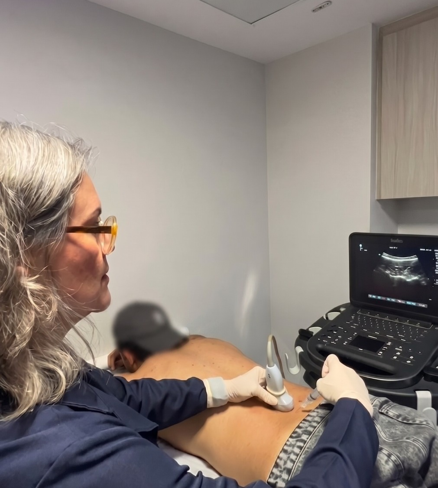
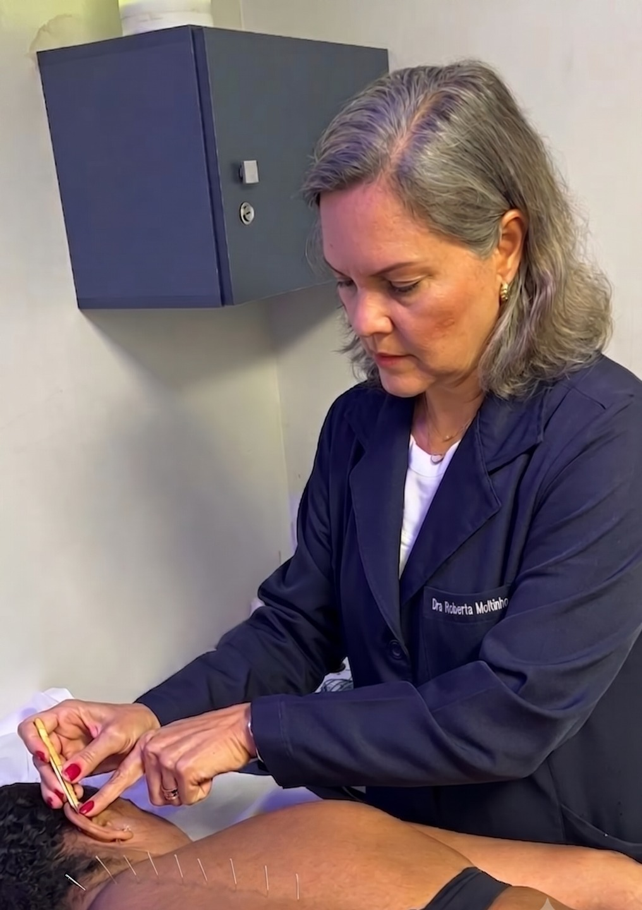
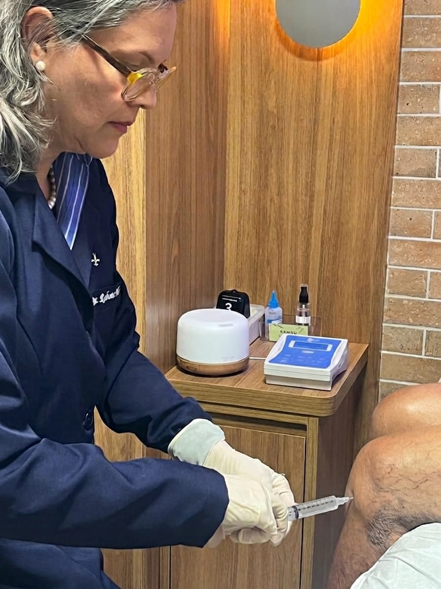
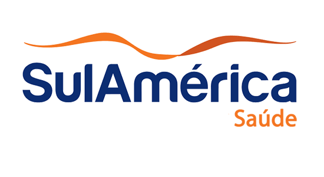
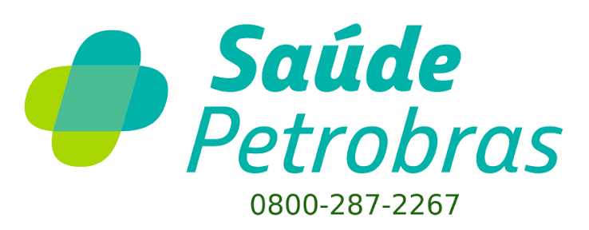

Dor - Ortopedia - Traumatologia - Acupuntura
Cuidado que escuta a dor antes de tratá-la.
Eu me chamo Roberta Moitinho e uno a precisão clinica com as técnicas integrativas mais modernas para devolver ao paciente movimento e qualidade de vida, com acolhimento em cada consulta.
- CRM: 14622
- TEOT: 9521
- RQE: 12328
- RQE: 15647
- RQE: 17681
Sobre sua médica
Roberta Moitinho
Médica Ortopedista e Traumatologista · Especialista em Dor e Acupuntura
Formada em Medicina pela Escola Bahiana de Medicina e Saúde Pública e especializada em Ortopedia, Acupuntura, Clínica da Dor e Traumatologia, a Dra. Roberta dedica sua prática ao tratamento da dor sob um olhar amplo — unindo procedimentos ortopédicos tradicionais e da Clínica da Dor a técnicas integrativas como acupuntura, terapia de ondas de choque e bloqueios anestesicos.
Meu trabalho parte do princípio de entender a origem da dor para cuidar da causa, não apenas do sintoma, em consultas pensadas para acolher cada paciente com atenção, empatia e clareza.
- CRM
- 14622
- Ortopedia e Traumatologia
- TEOT: 9521
RQE: 12328 - Dor
- RQE: 15647
- Acupuntura
- RQE: 17681
No dia a dia da clínica
Uma rotina dedicada ao alívio da dor



Tratamentos
Procedimentos e terapias
Clique em um procedimento para saber mais.
Onde me encontrar
Locais de atendimento
CTD — Clínica de Terapia da Dor
Unidade Salvador Trade Center
- Segunda-feira Manhã
- Terça-feira Manhã
Clínica Salva'dor
Unidade Garibaldi
- Segunda-feira Tarde
- Terça-feira Tarde
- Sexta-feira Manhã
Clínica Vitador
Unidade Pituba
- Quinta-feira Manhã
Principais Planos


Quem já passou por aqui
Avaliações e elogios
Deixe seu depoimento
Vamos cuidar da sua dor juntos?
Fale com a equipe da Dra. Roberta e agende sua consulta na unidade mais próxima de você.